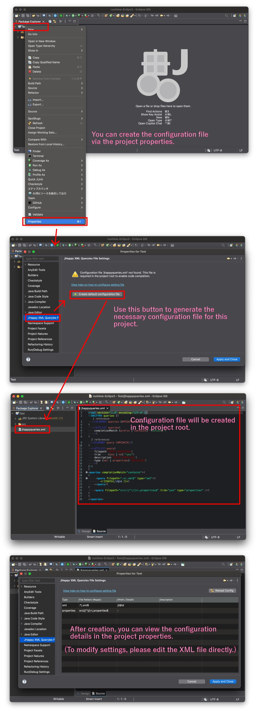

This guide explains how to configure jhappyqueries.xml to enable intelligent code completion for your project.
jhappyqueries.xml in the root directory of your Eclipse project.
The configuration file uses a simple XML format with a DTD definition for validation.
<?xml version="1.0" encoding="UTF-8"?>
<!DOCTYPE queries [
<!ELEMENT queries (#PCDATA|query)*>
<!ATTLIST queries completionMatch (prefix | contains) "contains">
<!ELEMENT query (#PCDATA)>
<!ATTLIST query filepath CDATA #IMPLIED trim (yes | no) "yes" type (xml | properties) "xml" description CDATA #IMPLIED>
]>
<queries completionMatch="contains">
<!-- Your queries here -->
</queries>
| Attribute | Description |
|---|---|
filepath |
Regular expression to match target files (e.g., .*\.xml$). |
type |
File type: xml or properties. |
trim |
Whether to trim whitespace from the extracted keys (default: yes). |
description |
Short text shown in the Project Properties table. |
To extract keys from an XML attribute (e.g., <item id="my_key">), use CDATA with an XPath expression:
<query filepath=".*\.xml$" type="xml"><![CDATA[//@id]]></query>
For standard .properties files, you don't need an XPath. Just specify the file pattern:
<query filepath="src/.*\.properties$" type="properties" />
